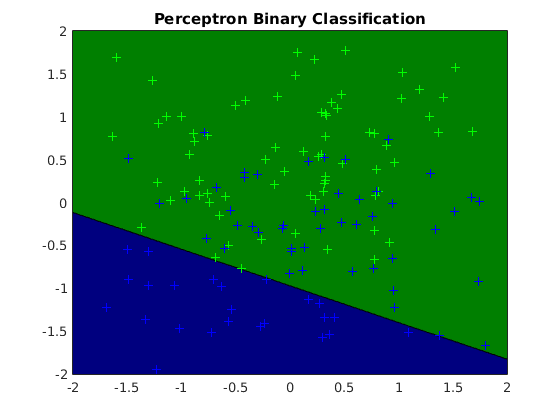
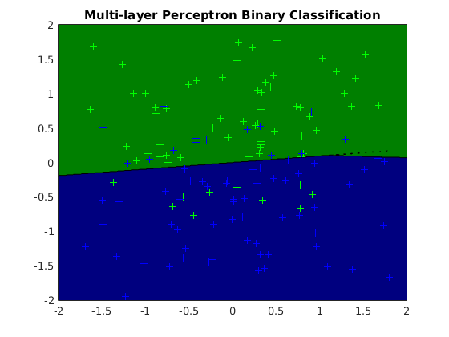
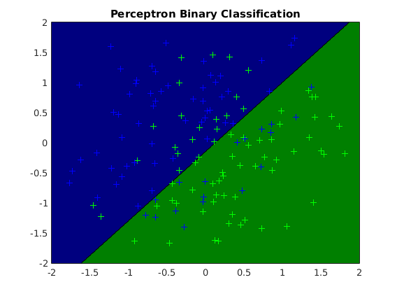
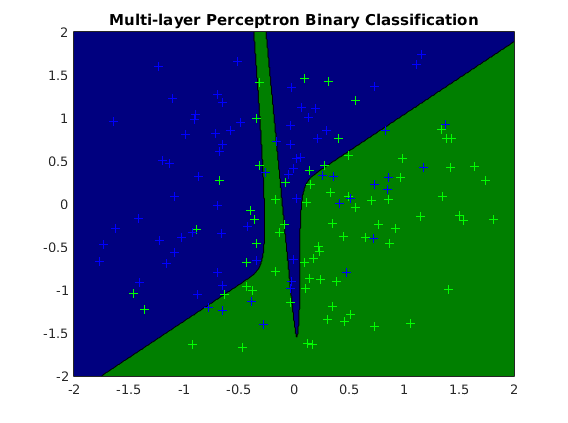
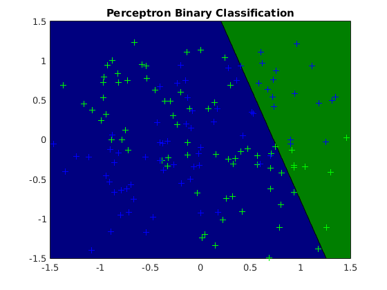
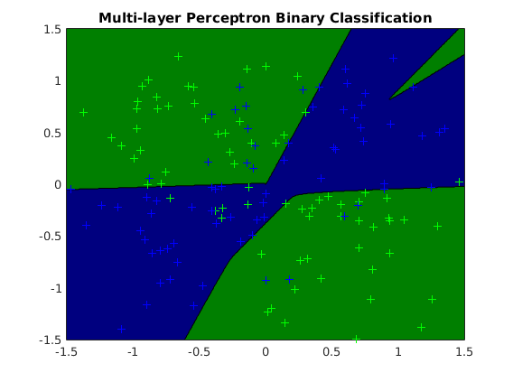

Contents
- Description of demo_binaryclass_mlp.m
- usage of perceptron binary classification (vert dataset)
- usage of MLP binary classification (vert dataset)
- usage of perceptron binary classification (slanted dataset)
- usage of MLP binary classification (slanted dataset)
- usage of perceptron binary classification (groups dataset)
- usage of MLP binary classification (groups dataset)
Description of demo_binaryclass_mlp.m
Uses perceptrons and multi-layer perceptrons for binary classification with various architectures
clear all close all generateData_vert
usage of perceptron binary classification (vert dataset)
options_st = []; model_st = ml_binaryclass_perceptron(Xtrain, ytrain, options_st); yhat_st = model_st.predict(model_st, Xtest); testError_st = mean(yhat_st ~= ytest); fprintf('Averaged absolute test error with %s is: %.3f\n', ... model_st.name, testError_st);
Averaged absolute test error with Perceptron Binary Classification is: 0.418
usage of MLP binary classification (vert dataset)
options_tr = []; options_tr.nHidden = [3 3 3]; model_tr = ml_binaryclass_MLP(Xtrain, ytrain, options_tr); yhat_tr = model_tr.predict(model_tr, Xtest); testError_tr = mean(yhat_tr ~= ytest); fprintf('Averaged absolute test error with %s is: %.3f\n', ... model_tr.name, testError_tr);
Averaged absolute test error with Multi-layer Perceptron Binary Classification is: 0.062
figure; plot2DClassifier(Xtrain, ytrain, model_st); figure; plot2DClassifier(Xtrain, ytrain, model_tr); generateData_slanted 
usage of perceptron binary classification (slanted dataset)
options_st = []; model_st = ml_binaryclass_perceptron(Xtrain, ytrain, options_st); yhat_st = model_st.predict(model_st, Xtest); testError_st = mean(yhat_st ~= ytest); fprintf('Averaged absolute test error with %s is: %.3f\n', ... model_st.name, testError_st);
Averaged absolute test error with Perceptron Binary Classification is: 0.098
usage of MLP binary classification (slanted dataset)
options_tr = []; options_tr.nHidden = [3 3 3]; model_tr = ml_binaryclass_MLP(Xtrain, ytrain, options_tr); yhat_tr = model_tr.predict(model_tr, Xtest); testError_tr = mean(yhat_tr ~= ytest); fprintf('Averaged absolute test error with %s is: %.3f\n', ... model_tr.name, testError_tr);
Averaged absolute test error with Multi-layer Perceptron Binary Classification is: 0.156
figure; plot2DClassifier(Xtrain, ytrain, model_st); figure; plot2DClassifier(Xtrain, ytrain, model_tr); generateData_groups 
usage of perceptron binary classification (groups dataset)
options_st = []; model_st = ml_binaryclass_perceptron(Xtrain, ytrain, options_st); yhat_st = model_st.predict(model_st, Xtest); testError_st = mean(yhat_st ~= ytest); fprintf('Averaged absolute test error with %s is: %.3f\n', ... model_st.name, testError_st);
Averaged absolute test error with Perceptron Binary Classification is: 0.591
usage of MLP binary classification (groups dataset)
options_tr = []; options_tr.nHidden = [5 5 5]; model_tr = ml_binaryclass_MLP(Xtrain, ytrain, options_tr); yhat_tr = model_tr.predict(model_tr, Xtest); testError_tr = mean(yhat_tr ~= ytest); fprintf('Averaged absolute test error with %s is: %.3f\n', ... model_tr.name, testError_tr);
Averaged absolute test error with Multi-layer Perceptron Binary Classification is: 0.120
figure; plot2DClassifier(Xtrain, ytrain, model_st); figure; plot2DClassifier(Xtrain, ytrain, model_tr); 